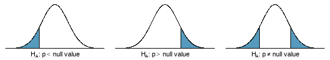
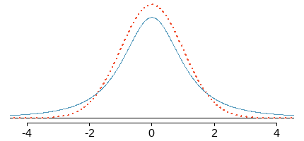
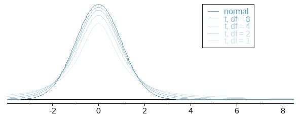
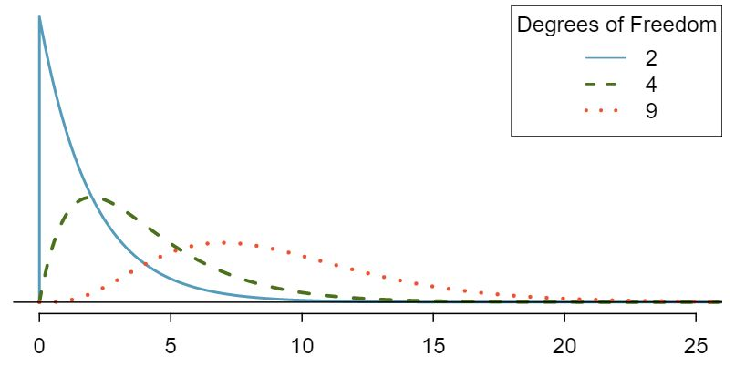

Chapter 8 Hypothesis Testing
Learning Outcome
| Perform hypotheses testing involving a sample mean, proportion, and standard deviation or variance. |
This chapter introduces the statistical method of hypothesis testing to test a given claim about a population parameter, such as proportion, mean, standard deviation, or variance. This method combines the concepts learned in the previous chapters, including sampling distribution, standard error, critical scores, and probability theory.
8.1 Hypothesis Testing
In statistics, a hypothesis is a claim or statement about a property of a population.
A hypothesis test (or test of significance) is a procedure for testing a claim about a property of a population.
The null hypothesis (\(H_0\)) is a statement that the value of a population parameter (such as proportion, mean, or standard deviation) is equal to some claimed value.
The alternative hypothesis (\(H_A\)) is a statement that the parameter has a value that somehow differs from the null hypothesis.
8.2 Testing of a Hypothesis
Probability of getting head from a single toss of coin, \(p = 0.5\).
Therefore, expected value of the number of heads from \(20\) tosses = \(10\).
Suppose, you have tossed a coin \(20\) times and seen \(15\) heads, \(\hat p = 0.75\).
Is the coin fair, or is it biased towards heads?
8.3 Null and Alternative Hypotheses
Null hypothesis \((H_0)\): states that any deviation from what was expected is due to chance error (i.e. the coin is fair).
Alternative hypothesis \((H_A)\): asserts that the observed deviation is too large to be explained by chance alone (i.e. the coin is biased towards heads).
\[ H_0: p = 0.5 \\ H_A: p > 0.5 \]
Now, what is the probability of \(p \ge 0.75?\)
From normal approximation of the sampling distribution of \(\hat p\),
\[ \begin{align} p &= 0.5 \\ se &= \sqrt{(0.5)(0.5)/20} = 0.112 \\ z &= (0.75 - 0.50)/0.112 = 2.236 \\ \\ P(z\ge2.236) &= 0.0127 \Leftarrow \text {this probability is also called p-value} \end{align} \] Hence, there is only \(1.27\%\) probability that observing \(15\) heads from \(20\) tosses is merely a chance. Then the question is, if the coin is indeed fair, is the p-value too small?
Interpretation of \(\text{p-value}\)
A \(\text{p-value}\) is the probability of obtaining the observed effect (or larger) under a “null hypothesis”. Thus, a \(\text{p-value}\) that is very small indicates that the observed effect is very unlikely to have arisen purely by chance, and therefore provides evidence against the null hypothesis.
It has been common practice to interpret a \(\text{p-value}\) by examining whether it is smaller than particular threshold values or “significance level”. In particular, \(\text{p-values}\) less than \(5\%\) are often reported as “statistically significant”, and interpreted as being small enough to justify rejection of the null hypothesis.
In the coin toss example:
p-value = \(1.27\%\) which is less than the \(5\%\) significance level.
Therefore, the result is statistically significant.
Conclusion: The coin is biased towards heads.
8.4 One-sided and two-sided tests
If the researchers are only interested in showing an increase or a decrease, but not both, use a one-sided test. If the researchers would be interested in any difference from the null value - an increase or decrease - then the test should be two-sided.
After observing data, it is tempting to turn a two-sided test into a one-sided test. Hypotheses must be set up before observing the data. If they are not, the test must be two-sided.

8.5 Formal Test of Hypothesis
Follow these seven steps when carrying out a hypothesis test.
State the name of the test being used.
Verify conditions to ensure the standard error estimate is reasonable and the point estimate follows the appropriate distribution and is unbiased.
Write the hypotheses and set them up in mathematical notation.
Identify the significance level \(\alpha\).
Calculate the test statistics (e.g. \(z\)), using an appropriate point estimate of the paramater of interest and its standard error. \[\text{test statistics} = \frac{\text{point estimate - null value}}{\text{SE of estimate}}\]
Find the \(\text{p-value}\), compare it to \(\alpha\), and state whether to reject or not reject the null hypothesis.
Write your conclusion in context.
8.6 Inference for a Single Proportion
Conditions of the sampling distributions of \(\hat p\) being nearly normal
The sampling distribution for \(\hat p\), taken from a sample of size \(n\) from a population with a true proportion \(p\), is nearly normal when
- the sample observations are independent and
- we expect to see at least \(10\) successes and \(10\) failures in our sample, i.e. \(np \ge 10\) and \(n(1-p) \ge 10\). This is called the success-failure condition.
If the conditions are met, then the sampling distribution of \(\hat p\) is nearly normal with mean \(\mu_{\hat p} = p\) and standard deviation \(\sigma_{\hat p} = \sqrt \frac{p(1-p)}{n}\).
8.7 Inference for a Single Proportion
The DMV claims that \(80\%\) of all drivers pass the driving test. In a survey of \(90\) teens, only \(61\) passed. Is there evidence that teen pass rates are significantly below \(80\%?\)
Let’s say, \(p\) is the true population proportion.
\[ \begin{align} \text {One-tailed test} &:\\ H_0&: p = 0.80 \\ H_A&: p < 0.80 \end{align} \]
Since \(p\) is unknown, we assume that \(p_0 = 0.80\) is representative of \(p\).
Verify sucess-failure condition:
\[
\begin{align}
np_0 \ge 10 \rightarrow 90 \times 0.80 \ge 10 \\
n(1-p_0) \ge 10 \rightarrow 90 \times (1-0.80) \ge 10
\end{align}
\]
Therefore, the conditions for a normal model are met.
8.8 Inference for a Single Proportion
Now, \[ \begin{align} \hat p &= \frac {61}{90} = 0.678 \\ \\ SD(\hat p) &= \sqrt \frac{p_0q_0}{n} = \sqrt \frac{(0.80)(0.20)}{90} = 0.042 \\ \\ z &= \frac {0.678-0.80}{0.042} = -2.90 \\ \\ \text{p-value} &= P(z < -2.90) = 0.002 < 0.05 \end{align} \]
Hence, we reject \(H_0\). Teen pass rate is significantly below population pass rate.
8.9 Inference for a Single Proportion
Under natural conditions, \(51.7\%\) of births are male. In Punjab India’s hospital \(56.9\%\) of the \(550\) births were male. Is there evidence that the proportion of male births is significantly different for this hospital?
\[ \begin{align} \text {Two-tailed test} &:\\ H_0&: p = 0.517 \\ H_A&: p \ne 0.517 \end{align} \]
Since \(p\) is unknown, we assume that \(p_0 = 0.517\) is representative of \(p\).
Verify sucess-failure condition:
\[
\begin{align}
np_0 \ge 10 \rightarrow 550 \times 0.517 \ge 10 \\
n(1-p_0) \ge 10 \rightarrow 550 \times (1-0.517) \ge 10
\end{align}
\]
8.10 Inference for a Single Proportion
\[ \begin{align} \hat p &= 0.569 \\ \\ SD(\hat p) &= \sqrt \frac{p_0q_0}{n} = \sqrt \frac{(0.517)(1-0.517)}{550} = 0.0213 \\ \\ z &= \frac {0.569-0.517}{0.0213} = 2.44 \\ \\ \text{p-value} &= 2 \times P(z > 2.44) = 2 \times 0.0073 = 0.0146 < 0.05 \end{align} \] Hence, we reject \(H_0\). Male birth rate is significantly higher at the hospital than the natural birth rate.
8.11 \(\text {t-Distribution}\)
According to the Central Limit Theorem, the sampling distribution of a statistic (e.g. sample mean) will follow a normal distribution, as long as the sample size is sufficiently large.
But sample sizes are sometimes small, and often we do not know the standard deviation of the population. When either of these problems occur, statisticians rely on the distribution of the \(\text {t-statistic (t-score)}\) with the degrees of freedom \((n-1)\),
\(t = \frac {\bar x - \mu}{s/\sqrt n}\)
Degrees of Freedom
\(\text {t-distribution }\) is determined by its degrees of freedom. The degrees of freedom refers to the number of independent observations in a set of data.
Properties of the \(\text {t-Distribution:}\)
- The mean of the distribution is equal to \(0\).
- The variance is equal to \(\frac {v}{v-2}\), where \(v\) is the DF and \(v \ge 2\).
8.12 \(\text {t-Distribution}\)
 
8.13 \(t \text {-test}\) | Testing Hypothesis About \(\mu\) with \(\sigma\) Not Known
Average weight of a mice population of a particular breed and age is \(30 \text{gm.}\) Weights recorded from a random sample of \(5\) mice from that population are \({31.8, 30.9, 34.2, 32.1, 28.8}.\) Test whether the sample mean is significantly greater than the population mean.
\[ \begin{align} H_0&: \mu = 30 \\ H_A&: \mu > 30 \\ \\ \bar x &= 31.56 \\ s &= 1.9604 \\ SE(\bar x) &= 1.9604/\sqrt 5 = 0.8767 \\ \\ t &= (31.56 - 30)/0.8767 = 1.779 \\ df &= (5 -1) = 4 \\ p-value &= 7.5\% > 5\% \end{align} \]
Conclusion: \(H_0\) cannot be rejected. The sample mean is not significantly greater than the population mean.
8.14 \(t \text {-test}\)
EPA recommended mirex screening is 0.08 ppm. A study of a sample of 150 salmon found an average mirex concentration of 0.0913 ppm with a std. deviation of 0.0495 ppm. Are farmed salmon contaminated beyond the permitted EPA level? Also, find a \(95\%\) confidence interval for the mirex concentration in salmon.
\[ \begin{align} H_0&: \mu = 0.08 \\ H_A&: \mu > 0.08 \\ \\ \bar x &= 0.0913 \\ s &= 0.0495 \\ SE(\bar x) &= 0.0495/\sqrt {150} = 0.0040 \\ \\ t_{149} &= (0.0913 - 0.08)/0.0040 = 2.795 \\ df &= (150 -1) = 149 \\ p-value &= P(t_{149}>2.795)= 0.29\% < 5\% \end{align} \]
Conclusion: Reject \(H_0\). The sample mean mirex level significantly higher that the EPA screening level.
8.15 Estimating a Population Standard Deviation or Variance
This section presents methods for using a sample standard deviation \(s\) (or a sample variance \(s^2\)) to estimate the value of the corresponding population standard deviation \(\sigma\) (or population variance \(\sigma^2\)).
Point Estimate: The sample variance \(s^2\) is the best point estimator of the population variance \(\sigma^2\). The sample standard deviation \(s\) is commonly used as a point estimate of \(\sigma\), even though it is a biased estimator.
Confidence Interval: When constructing a confidence interval estimate of a population standard deviation (or population variance), we construct the confidence interval using the \(\chi^2 \text{ distribution}\).
8.16 Chi-Squared Distribution
- In a normally distributed population with variance \(\sigma^2\), if we randomly select independent samples of size \(n\) and, for each sample, compute the sample variance \(s^2\), the sample statistic \(\chi^2 = (n -1)s^2/{\sigma^2}\) has sampling distribution called the chi-squared distribution,
\[ \chi^2 = \frac{(n-1)s^2}{\sigma^2} \]
- \(\text{Degrees of freedom: df } = n -1\)
- \(\chi^2 \text{ distribution }\) is skewed to the right, unlike normal and student \(t\) distributions.
- \(\chi^2 \ge 0\)
- The chi-squared distribution is different for each number of degrees of freedom. As the degrees of freedom increases, chi-squared distribution approaches a normal distribution.
8.17 \(\chi^2 \text{distribution}\)

8.18 Confidence Interval for Estimating a Population Standard Deviation or Variance
Confidence Interval for the Population Varaince \(\sigma^2\)
\[ \frac{(n-1)s^2}{\chi^2_L} < \sigma^2 < \frac{(n-1)s^2}{\chi^2_R} \]
Confidence Interval for the Population Variance \(\sigma\)
\[ \sqrt{\frac{(n-1)s^2}{\chi^2_L}} < \sigma < \sqrt{\frac{(n-1)s^2}{\chi^2_R}} \]
8.19 Confidence Interval for Estimating a Population Standard Deviation or Variance
\[ \begin{align} &s = 14.29263 \\ &n = 22 \\ &CL = 95\% \\ \\ &\frac{(n-1)s^2}{\chi^2_L} < \sigma^2 < \frac{(n-1)s^2}{\chi^2_R} \\ \\ &\frac{21.(14.29263)^2}{10.283^2} < \sigma^2 < \frac{21.(14.29263)^2}{35.479^2} \\ \\ &120.9 < \sigma^2 < 417.2 \\ &11.0 < \sigma < 20.4 \end{align} \]
8.20 Testing Hypothesis About a Variance
Listed below are the heights (cm) for the simple random sample of female supermodels. Use a 0.01 significance level to test the claim that supermodels have heights with a standard deviation that is less than \(\sigma=7.5 \text { cm}\) for the population of women. Does it appear that heights of supermodels vary less than heights of women from the population?
\[ \text{178, 177, 176, 174, 175, 178, 175, 178} \\ \text{178, 177, 180, 176, 180, 178, 180, 176} \\ s^2 = 3.4 \]
\[ \begin{align} H_0: \sigma^2 = 56.25 \\ H_A: \sigma^2 < 56.25 \\\\ \chi^2 = (n-1)\frac{s^2}{\sigma^2} &= (15)\frac{(3.4)}{(56.25)} \\ &= 0.907 \\ \\ p-value &= 1.2701438\times 10^{-7} < \alpha = 0.01 \\ &\text {Therefore, we reject } H_0. \end{align} \]